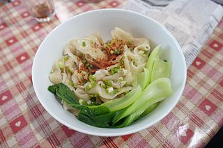

Chili Garlic Oil Noodles

Description:
This delicious and savory dish is quick and easy to make.
This is essentially making fresh chili oil over the noodles.
Ingredients:
- 1 serving dry wide noodles
- 2 small head of bok choy
- 3 TBSP neutral oil
- 1 TBSP chili flakes
- 1 TBSP soy sauce
- 1 tsp Black Vinegar
- 4 cloves garlic
- 2 TBSP chopped green onion
- 1/4 tsp salt
- 1/8 tsp ground white pepper
Optional to Finish
- Chili Garlic sauce
- More chopped green onion
- More soy sauce or vinegar
Steps:
- Cook noodles per package instructions
- Blanch bok choy until done. Place in bowl
- While oil is heating in a separate pan, top the noodles with chili flakes, minced garlic, soy sauce, vinegar, green onion, salt, and pepper.
- Continue to heat oil until hot enough, approximately 375 degrees fahrenheit
- Carefully pour in the very hot oil over the noodles. Mix everything well to coat the noodles